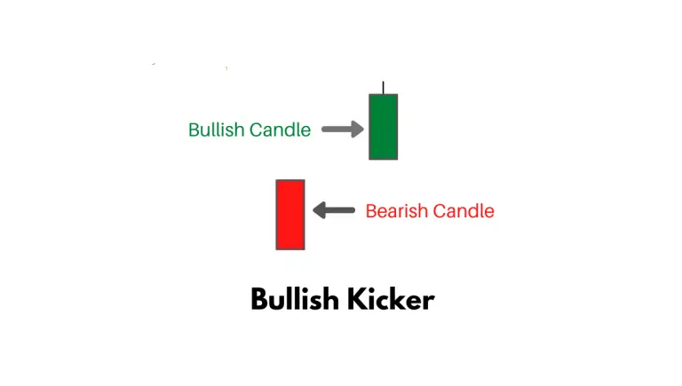
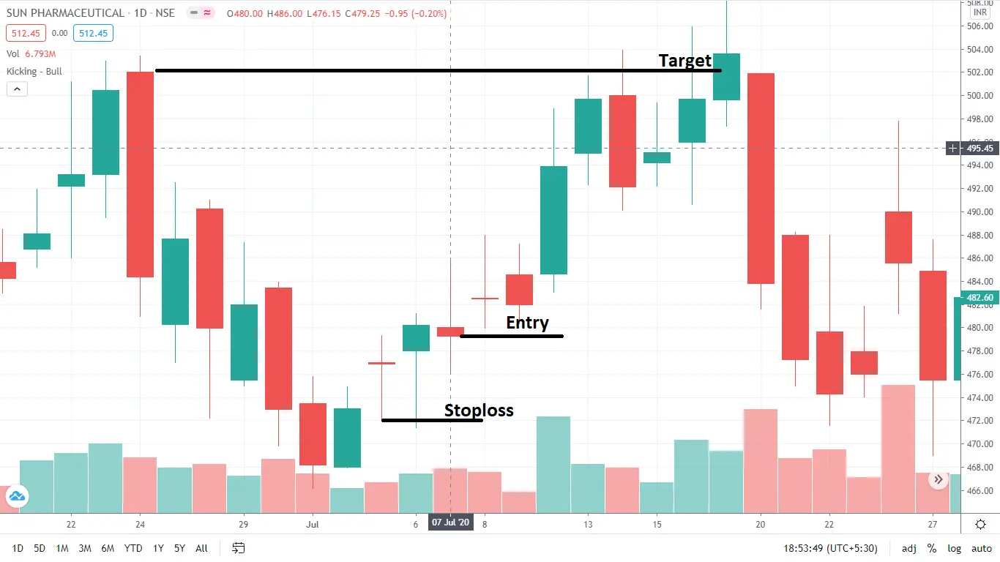
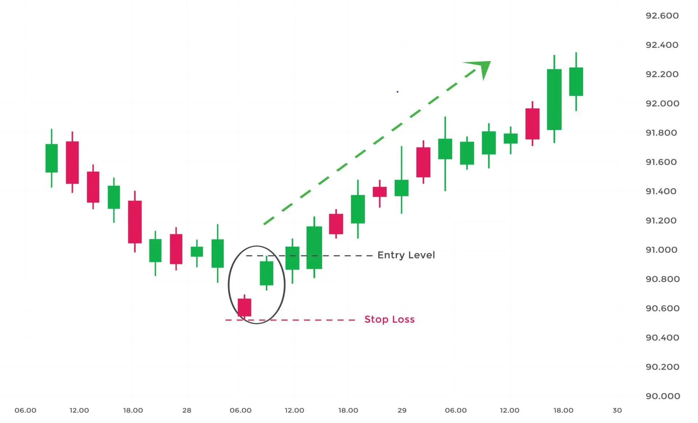

A bullish kicker is a two candlestick pattern that’s usually formed after a significant downtrend, but could also appear after an uptrend.

The bullish kicker consists of a large bullish candlestick, that’s led by a gap to the upside and a bearish candle. Its relevance is magnified when it occurs in overbought or oversold areas.
If you spot a bullish kicker after an uptrend, that could be a sign that the market still has enough strength to continue the uptrend.
| How to Identify a Bullish Kicker Candlestick Pattern? |
A bullish kicker candle could appear despite the trend and is a strong bullish signal. Here is how you can identify a bullish kicker:
| How to trade a Bullish Kicker Candlestick Pattern? |
When a trader recognizes a Bullish Kicker pattern on a particular stock chart, you can enter into the trade in the next candle after the Bullish kicker pattern emerges. The stop loss should be placed at the low of the previous candle.

